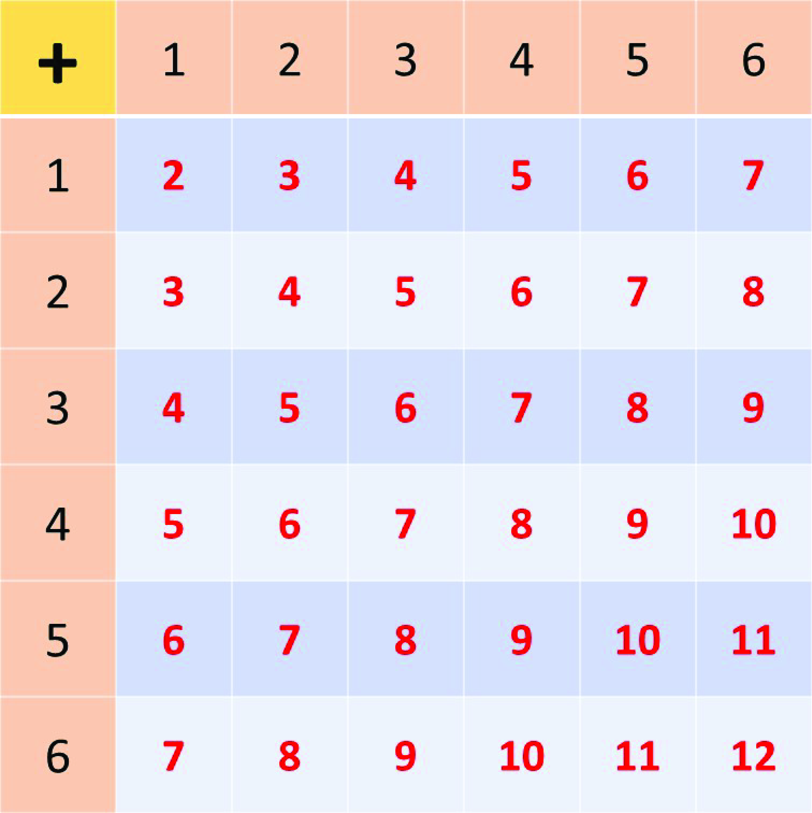

Single Outcomes
Consider the outcome of throwing a die. A die has six sides with numbers 1, 2, 3, 4, 5 and 6, each on a side. We call each of these numbers a possible outcome in the event of throwing the die.
This is because when the die is thrown, only one of the numbers appear at the top when it falls. Hence, there are 6 possible outcomes in the event of throwing a die, and out of these 6 possible outcomes, only 1 of the outcomes is successful.
We, therefore, say that the probability of getting this 1 successful outcome is one (1) out of six (6), that is, \(\frac{1}{6}\).
Example 1
Using Impossible, Possible or Certain, describe each of the outcomes below when a fair die is thrown:
1. Obtaining the number 2.
2. Obtaining the number 7.
3. Obtaining the number 4.
Solution
Let's discuss the solution to these problems:
1. The number 2 is one of the 6 possible outcomes when a fair die is
thrown, hence it also has a probability of \(\frac{1}{6}\) and is a
possible event.
Can you guess the probability of obtaining the number 7?
2. The number 7 is not part of the sample space of possible outcomes when a die is thrown, {1, 2, 3, 4, 5, 6}, hence obtaining a 7 when a die is thrown is impossible. It therefore has a probability of 0.
The event of obtaining a 4 when a die is thrown is possible, as it is part of the set of possible outcomes when a die is thrown. The event of obtaining the number 4 also has a probability of \(\frac{1}{6}\).
Throwing 2 Dice
Now, say you had 2 dice in your hands and you decided to throw them at the same time, or one after another.
The diagram below represents a sum of all the possible outcomes in the event of throwing 2 dice. The first of each column or row represents the individual possible outcomes of the 2 dice.
Analyse the diagram carefully and answer the questions that follows.
Describe the following after throwing the 2 dice using words like possible, impossible or certain:
1. Obtaining a total of 12.
2. Obtaining a total of 13.
3. Obtaining a total of 2.
Solution
1. Possible
\(\hspace{1cm}\)P(Obtaining a total of 12) \(= \frac{1}{36}\)
2. Impossible
\(\hspace{1cm}\)P(Obtaining a total of 13) \(= \frac{0}{36}\)
\(\hspace{7.35cm}= 0\)
3. Possible
\(\hspace{1cm}\)(1 outcome out of 36 possible outcomes).